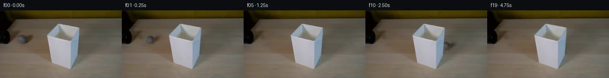

![首帧]()

Round 00
2026-11-05T16:13:50.094836+00:00像素候选变化代码 +176/−0inspection 更新
pixels f77151d84cdf7ee8 · code c34f6fb6ac27c94c
查看本轮 generate.py 真实 diff
--- previous/generate.py
+++ current/generate.py
@@ -0,0 +1,176 @@
+"""Deterministic local pixel continuation; no external models or rendering engine."""
+from pathlib import Path
+import json
+import numpy as np
+from PIL import Image, ImageDraw
+import cv2
+from scipy.ndimage import map_coordinates, gaussian_filter
+import artifact_io
+
+ROOT = Path(__file__).resolve().parent
+A = np.asarray(Image.open(ROOT / 'first_frame.png').convert('RGB')).copy()
+H, W = A.shape[:2]
+assert (H, W) == (144, 256)
+Y, X = np.mgrid[:H, :W].astype(np.float64)
+CX, CY, R = 45.5, 61.0, 9.6
+SLOPE = 0.12
+DIRECTION = np.array([1., SLOPE, 0.])
+DIRECTION /= np.linalg.norm(DIRECTION)
+AXIS = np.array([-DIRECTION[1], DIRECTION[0], 0.])
+
+
+def center(t):
+ x = CX + 52 * t - 1.2 * t * t
+ return x, CY + SLOPE * (x - CX)
+
+
+def tilted_ellipse(x, y, cx, cy, rx, ry, angle):
+ dx, dy = x - cx, y - cy
+ c, s = np.cos(angle), np.sin(angle)
+ u, v = c * dx + s * dy, -s * dx + c * dy
+ return (u / rx) ** 2 + (v / ry) ** 2
+
+
+# Restore the original ball and its moving cast shadow, retaining the tube.
+ball_cleanup = ((X - CX) / 12.0) ** 2 + ((Y - CY) / 12.0) ** 2 < 1
+shadow_cleanup = tilted_ellipse(X, Y, 58.5, 59.0, 15.0, 9.2, -0.57) < 1
+contact_cleanup = tilted_ellipse(X, Y, 52., 67., 8., 6., 0.) < 1
+cleanup = ball_cleanup | shadow_cleanup | contact_cleanup
+cleanup &= X >= 33
+clean = cv2.inpaint(A, cleanup.astype(np.uint8) * 255, 5, cv2.INPAINT_TELEA)
+cleanup_alpha = gaussian_filter(cleanup.astype(float), 0.60)
+# No modifications to the black tube or regions outside the local cleanup.
+cleanup_alpha[X < 32] = 0
+background = A.astype(float) * (1 - cleanup_alpha[..., None]) + clean.astype(float) * cleanup_alpha[..., None]
+
+# The silhouette is measured from pale RGB runs, including the original
+# interior surface. Copying it last keeps the fixed shade and its antialiasing.
+r, g, b = A.astype(float).transpose(2, 0, 1)
+pale = (r > 125) & (b > r - 8) & (X >= 97) & (X <= 168) & (Y >= 28) & (Y <= 125)
+foreground = np.zeros((H, W), bool)
+for yy in range(28, 126):
+ columns = np.flatnonzero(pale[yy])
+ if len(columns):
+ foreground[yy, max(0, columns[0] - 1): min(W, columns[-1] + 2)] = True
+background[foreground] = A[foreground]
+
+# Fit stationary illumination to the original sphere's measured RGB pixels.
+# Rolling moves only the observed surface detail, leaving the light fixed.
+nx, ny = (X - CX) / R, (Y - CY) / R
+nz = np.sqrt(np.maximum(0, 1 - nx * nx - ny * ny))
+fit_mask = (nx * nx + ny * ny) < 0.76
+
+def basis(x, y, z):
+ return np.stack([np.ones_like(x), x, y, z, x*x, y*y, x*y], -1)
+
+B = basis(nx, ny, nz)
+weights = np.linalg.lstsq(B[fit_mask], A[fit_mask].astype(float), rcond=None)[0]
+illumination = B @ weights
+residual = A.astype(float) - illumination
+# Restrict extraction to actual ball pixels and soften edge contamination.
+source_gate = np.clip((0.97 - (nx * nx + ny * ny)) / 0.21, 0, 1)
+residual *= source_gate[..., None]
+residual = np.clip(residual, -7., 7.)
+residual = gaussian_filter(residual, (0.42, 0.42, 0.))
+
+
+def rotate_normals(n, theta):
+ # Inverse Rodrigues rotation: the top of the rolling sphere travels right.
+ c, s = np.cos(-theta), np.sin(-theta)
+ return n*c + np.cross(AXIS, n)*s + np.sum(n*AXIS, axis=-1)[..., None]*AXIS*(1-c)
+
+
+def draw_ball(frame, cx, cy, theta):
+ # Four by four coverage samples supply subpixel antialiasing.
+ x0, x1 = max(0, int(np.floor(cx-R-1))), min(W, int(np.ceil(cx+R+2)))
+ y0, y1 = max(0, int(np.floor(cy-R-1))), min(H, int(np.ceil(cy+R+2)))
+ if x0 >= x1 or y0 >= y1:
… diff truncated; 89 more lines …